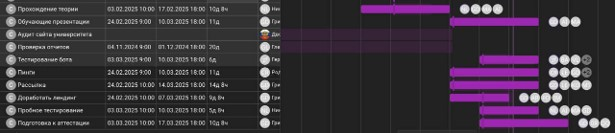

Обновление лендинга проекта
Апрель 2025
Веб-разработчики провели доработку лендинга, добавив новые разделы с информацией, проектами и контактами.
Также были улучшены навигация и дизайн сайта, что сделало его более привлекательным и удобным для пользователей.
Эти изменения помогут лучше презентовать наши услуги и упростить процесс подачи заявок на тестирование.
Активность SMM отдела
Февраль-Апрель 2025
СММ-отдел активно занимался продвижением проекта, создавая рекламные
материалы и привлекая внимание к услугам лаборатории через различные каналы коммуникации.
Тестирование бота "Полихелпер"
Март 2025
Был проведен комплексный анализ бота "Полихелпер", включая функциональное
и нефункциональное тестирование. В процессе тестирования выявлены ключевые
дефекты, составлен подробный отчет с рекомендациями по улучшению.
Тестирование позволило не только улучшить качество продукта, но и получить ценный опыт для участников проекта.
Работа с первокурсниками
Февраль 2025
Первокурсники познакомились с основами тестирования, инструментами и методиками.
После обучения они провели пробное тестирование проекта, что помогло им закрепить
теоретические знания и получить первый практический опыт.
Это важный шаг для их адаптации и дальнейшего участия в работе лаборатории.
